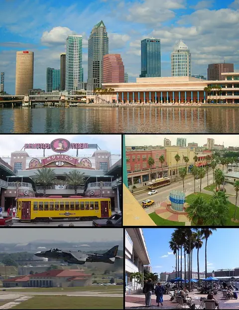

Sheet 1 · TP
Tampa
Tampa, the county seat of Hillsborough County and, per Visit Tampa Bay, Florida's third-largest city, sits on the north shore of Tampa Bay, with the Hillsborough River running through downtown.
- 228
- places
- 107
- to stay
- 243
- events
Signature places
- Busch Gardens Tampa BayTheme park
- Bayshore BoulevardWaterfront
- Ybor City Historic DistrictHistoric district
Signature event under way
Howl-O-Scream at Busch Gardens Tampa BayThrough Oct 31 · Busch Gardens Tampa Bay